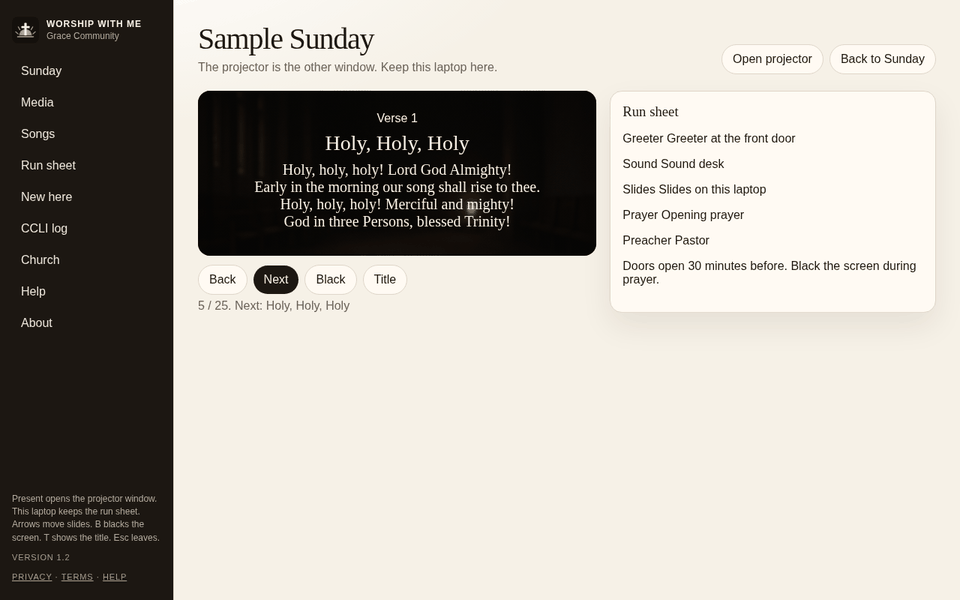
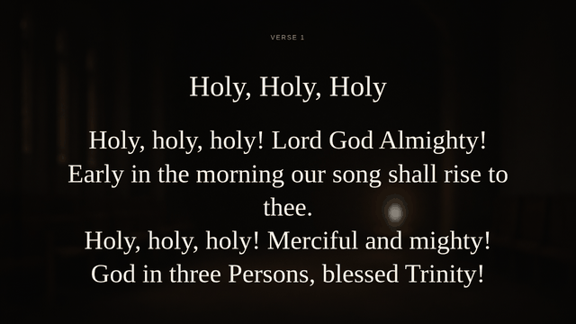
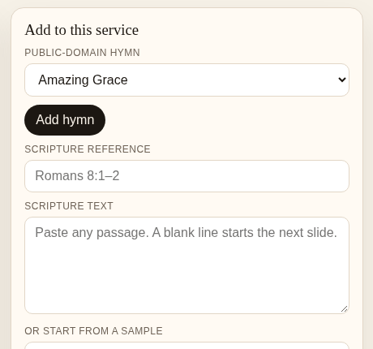
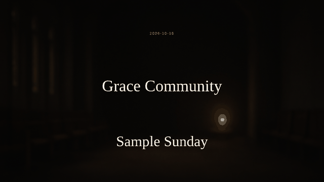

Slides on the projector
Present opens a second window for the screen. Arrow keys move the slides, B blacks the screen, T shows the title.
Free · Runs in your browser
Worship With Me is a free app for the church laptop. It puts the slides, songs, and scripture on the projector and keeps the run sheet in front of you. It still works if the wifi drops.
Works in your browser. No install or account needed.

Made for one church and the one person running the slides.
Present opens a second window for the screen. Arrow keys move the slides, B blacks the screen, T shows the title.
Public-domain hymns are built in. Add your own songs, and licensed songs end with the author, copyright line, and CCLI number.
Paste a passage and it splits into readable slides. King James samples are included.
The order of service, who's greeting, sound, prayer, and preaching, plus your notes, all on the laptop.
Open it once with wifi and it opens again without it. Export Sunday, carry the file to the building, and import it there.
A QR welcome card for new visitors, and a CCLI log of the songs you used.



Churches still need their own CCLI or OneLicense license for songs that are not public domain.
Open the app. The first time, a short setup guide asks for your church name and a projector theme, and can load a sample Sunday. Then add hymns, scripture, and words slides, and fill in the run sheet.
Press Export Sunday to save the service as a file. Take it to church on a USB stick or by email, and use Import Sunday on the church laptop.
Press Present and drag the new window to the projector. Your laptop keeps the run sheet. No second screen? Rehearse shows everything on one.
Services, songs, and new-visitor cards are saved in this browser on the church computer. They are not uploaded. If you agree, the app sends one short note when you present (church name, service name, date, and version) and nothing else. Read the privacy page.
After the first visit, the app is saved on the computer and opens without a connection. Imported files stay on the computer too.
Only the first time. After the app has been opened once, it opens on that computer without a connection, so a dropped church wifi doesn't stop the service.
Public-domain hymns, including Amazing Grace, Holy, Holy, Holy, It Is Well with My Soul, Come, Thou Fount, Blessed Assurance, A Mighty Fortress, Be Thou My Vision, Abide with Me, and the Doxology. There are also King James scripture samples.
Paste lyrics from SongSelect if your church holds a CCLI license. The last slide shows the author, copyright line, and your license number, and the CCLI log keeps track of what you sang. Churches still need their own CCLI or OneLicense license. Streaming the lyrics may need a separate streaming license.
Pilot churches wanted. Run a real Sunday with it and tell us how it went. Email churchofx4u@gmail.com.
Copied ✓